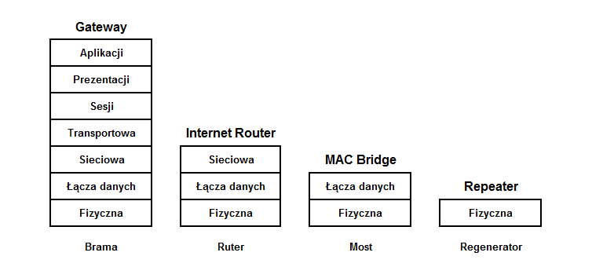

Model OSI (pełna nazwa ISO OSI RM, ang. ISO Open Systems Interconnection Reference Model – model odniesienia łączenia systemów otwartych) lub OSI – standard zdefiniowany przez ISO oraz ITU-T opisujący strukturę komunikacji w sieci komputerowej
Międzynarodowa Organizacja Normalizacyjna (ang. International Organization for Standardization) na początku lat osiemdziesiątych XX w. dostrzegła potrzebę stworzenia modelu sieciowego, dzięki któremu producenci mogliby opracowywać współpracujące ze sobą rozwiązania sieciowe. W taki sposób powstała specyfikacja Open Systems Interconnection Reference Model, która do polskich norm została zaadaptowana w 1995 roku.
Model ISO OSI RM jest traktowany jako model odniesienia (wzorzec) dla większości rodzin protokołów komunikacyjnych. Podstawowym założeniem modelu jest podział systemów sieciowych na 7 warstw (ang. layers) współpracujących ze sobą w ściśle określony sposób. Model warstwowy został przyjęty przez ISO w 1984 roku. Najbardziej istotnym organem jest wspólny komitet powołany przez ISO/IEC, zwany Joint Technical Committee 1- Information Technology (JTC1). Formalnie dzieli się jeszcze na podkomitety SC.
Dla Internetu sformułowano uproszczony Model TCP/IP, który ma 4 warstwy.
Wyróżniamy trzy warstwy górne, czyli warstwę aplikacji, prezentacji i sesji. Ich zadaniem jest współpraca z oprogramowaniem realizującym zadania zlecane przez użytkownika systemu komputerowego. Tworzą one pewien interfejs, który pozwala na komunikację z warstwami niższymi. Ta sama warstwa realizuje dokładnie odwrotne zadanie w zależności od kierunku przepływu danych. Przyjmijmy, że dane przepływają w dół Modelu OSI, kiedy płyną od użytkownika do urządzeń sieciowych oraz w górę w przeciwnym wypadku.
Warstwa aplikacji jest warstwą najwyższą, zajmuje się specyfikacją interfejsu, który wykorzystują aplikacje do przesyłania danych do sieci (poprzez kolejne warstwy modelu ISO/OSI). W przypadku sieci komputerowych aplikacje są zwykle procesami uruchomionymi na odległych hostach. Interfejs udostępniający programistom usługi dostarczane przez warstwę aplikacji opiera się na obiektach nazywanych gniazdami (ang. socket).
Jeżeli użytkownik posługuje się oprogramowaniem działającym w architekturze klient-serwer, zwykle po jego stronie znajduje się klient, a serwer działa na maszynie podłączonej do sieci świadczącej usługi równocześnie wielu klientom. Zarówno serwer, jak i klient znajdują się w warstwie aplikacji. Komunikacja nigdy nie odbywa się bezpośrednio między tymi programami. Kiedy klient chce przesłać żądanie do serwera, przekazuje komunikat w dół do warstw niższych, które fizycznie przesyłają go do odpowiedniej maszyny, gdzie informacje ponownie wędrują w górę i są ostatecznie odbierane przez serwer. Jednocześnie zapewnia interfejs między aplikacjami, których używamy, a siecią (umożliwia komunikację).
Podczas ruchu w dół zadaniem warstwy prezentacji jest przetworzenie danych od aplikacji do postaci kanonicznej (ang. canonical representation) zgodnej ze specyfikacją OSI-RM, dzięki czemu niższe warstwy zawsze otrzymują dane w tym samym formacie. Kiedy informacje płyną w górę, warstwa prezentacji tłumaczy format otrzymywanych danych na zgodny z wewnętrzną reprezentacją systemu docelowego. Wynika to ze zróżnicowania systemów komputerowych, które mogą w różny sposób interpretować te same dane. Dla przykładu bity w bajcie danych w niektórych procesorach są interpretowane w odwrotnej kolejności niż w innych. Warstwa ta odpowiada za kodowanie i konwersję danych oraz za kompresję / dekompresję; szyfrowanie / deszyfrowanie. Warstwa prezentacji obsługuje np. MPEG, JPG, GIF itp.
Warstwa sesji otrzymuje od różnych aplikacji dane, które muszą zostać odpowiednio zsynchronizowane. Synchronizacja występuje między warstwami sesji systemu nadawcy i odbiorcy. Warstwa sesji „wie”, która aplikacja łączy się z którą, dzięki czemu może zapewnić właściwy kierunek przepływu danych – nadzoruje połączenie. Wznawia je po przerwaniu.
Najniższe warstwy zajmują się odnajdywaniem odpowiedniej drogi do celu, gdzie ma być przekazana konkretna informacja. Dzielą również dane na odpowiednie dla urządzeń sieciowych pakiety określane często skrótem PDU (ang. Protocol Data Unit). Dodatkowo zapewniają weryfikację bezbłędności przesyłanych danych. Ważną cechą warstw dolnych jest całkowite ignorowanie sensu przesyłanych danych. Dla warstw dolnych nie istnieją aplikacje, tylko pakiety/ramki danych. Warstwy dolne to warstwa transportowa, sieciowa, łącza danych oraz fizyczna.
Warstwa transportowa segmentuje dane oraz składa je w tzw. strumień. Warstwa ta zapewnia całościowe połączenie między stacjami: źródłową oraz docelową, które obejmuje całą drogę transmisji. Następuje tutaj podział danych na części, które są kolejno indeksowane i wysyłane do docelowej stacji. Na poziomie tej warstwy do transmisji danych wykorzystuje się dwa protokoły TCP (ang. Transmission Control Protocol) oraz UDP (ang. User Datagram Protocol). W przypadku gdy do transmisji danych wykorzystany jest protokół TCP stacja docelowa po odebraniu segmentu wysyła potwierdzenie odbioru. W wyniku niedotarcia któregoś z segmentów stacja docelowa ma prawo zlecić ponowną jego wysyłkę (kontrola błędów transportu). W przeciwieństwie do protokołu TCP w protokole UDP nie stosuje się potwierdzeń. Protokół UDP z racji konieczności transmisji mniejszej ilości danych zazwyczaj jest szybszy od protokołu TCP, jednakże nie gwarantuje dostarczenia pakietu. Oba protokoły warstwy transportowej stosują kontrolę integralności pakietów, a pakiety zawierające błędy są odrzucane.
Warstwa sieciowa jako jedyna dysponuje wiedzą dotyczącą fizycznej topologii sieci. Rozpoznaje, jakie drogi łączą poszczególne komputery (trasowanie) i decyduje, ile informacji należy przesłać jednym z połączeń, a ile innym. Jeżeli danych do przesłania jest zbyt wiele, to warstwa sieciowa po prostu je ignoruje. Nie musi zapewniać pewności transmisji, więc w razie błędu pomija niepoprawne pakiety danych. Standardowa paczka danych czasami oznaczana jest jako NPDU (ang. Network Protocol Data Unit). Nie znajdują się w nim żadne użyteczne dla użytkowników dane. Jedyne jego zadanie, to zapewnienie sprawnej łączności między bardzo odległymi punktami sieci. Routery są podstawą budowy rozległych sieci informatycznych takich jak Internet, bo potrafią odnaleźć najlepszą drogę do przekazania informacji. Warstwa sieciowa podczas ruchu w dół umieszcza dane wewnątrz pakietów zrozumiałych dla warstw niższych (kapsułkowanie). Jednocześnie warstwa sieci używa czterech procesów (adresowanie, enkapsulacja, routing, dekapsulacja). Protokoły warstwy sieci to: (IPv4, IPv6, ICMP, NOVELL IPX, APPLE TALK, CLNS/DECN itd.).
W praktyce Model OSI został częściowo zmodyfikowany. Najczęstszą zmianą było połączenie warstwy fizycznej oraz łącza danych w jedną. Wynikało to z praktycznych cech tych warstw, które powodowały, że nie dało się odseparować ich pracy od siebie. Nie należy mylić Modelu OSI-RM z TCP/IP. Mimo pewnego podobieństwa oba te modele nie są w pełni zgodne.
Pakiety, przechodząc przez różne urządzenia sieciowe, dochodzą do różnych warstw modelu OSI. Zasięg pakietu w urządzeniu przedstawia rysunek:
